Porfolio
Recicla
 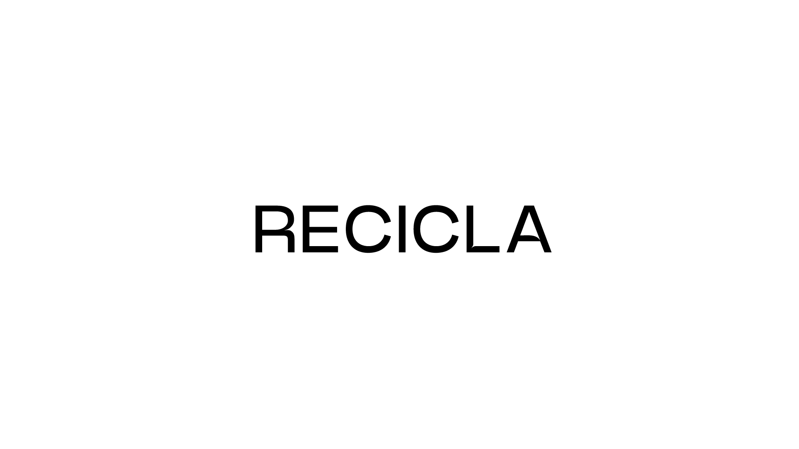
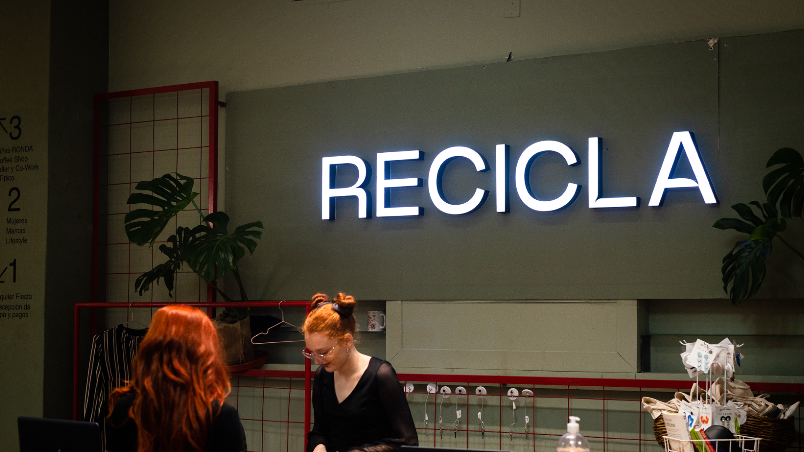
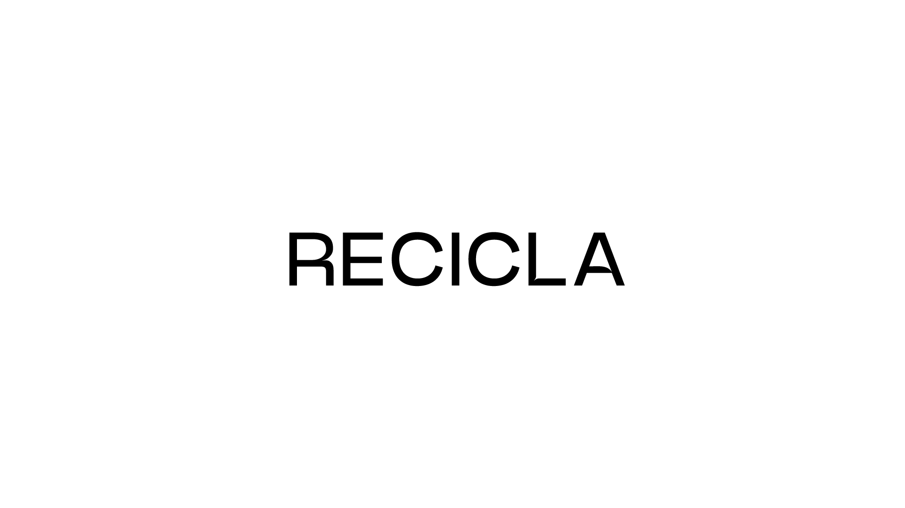
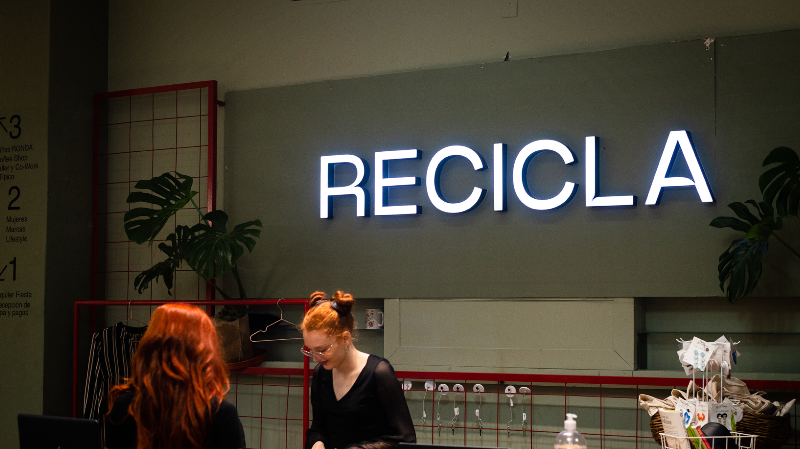
Recicla, es una marca reconocida en Uruguay, por ser una marca de ropa de segunda mano y una comunidad sustentable. Este fue un proyecto de rebrandign, que contaba con la complejidad de verse cool, actual, dinámico y fresco. Se eligió un universo visual versátil, colorido y dinámico, que demostrara que lo sustentable también puede verse cool.
Rooka
 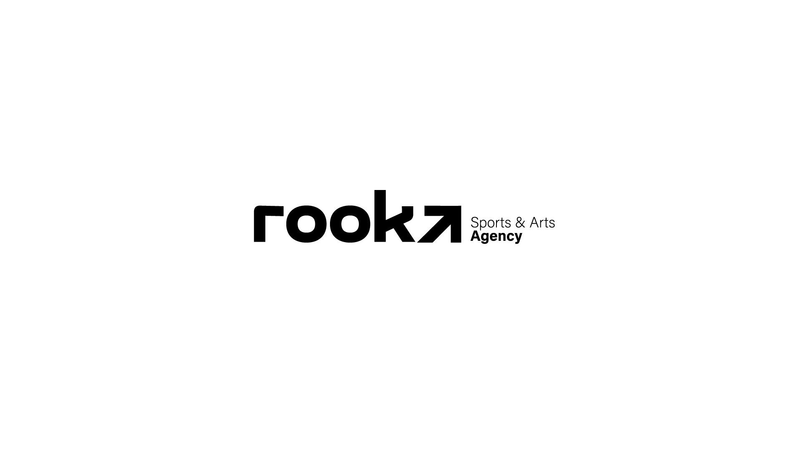
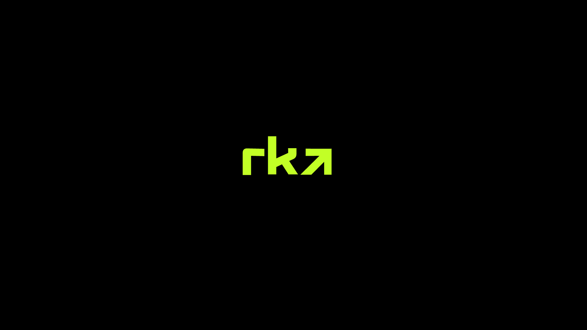
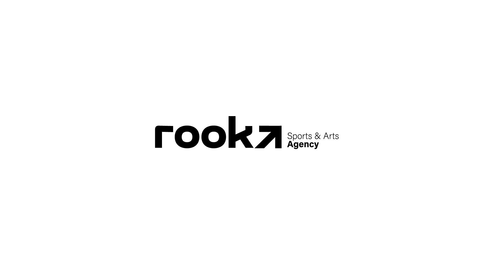
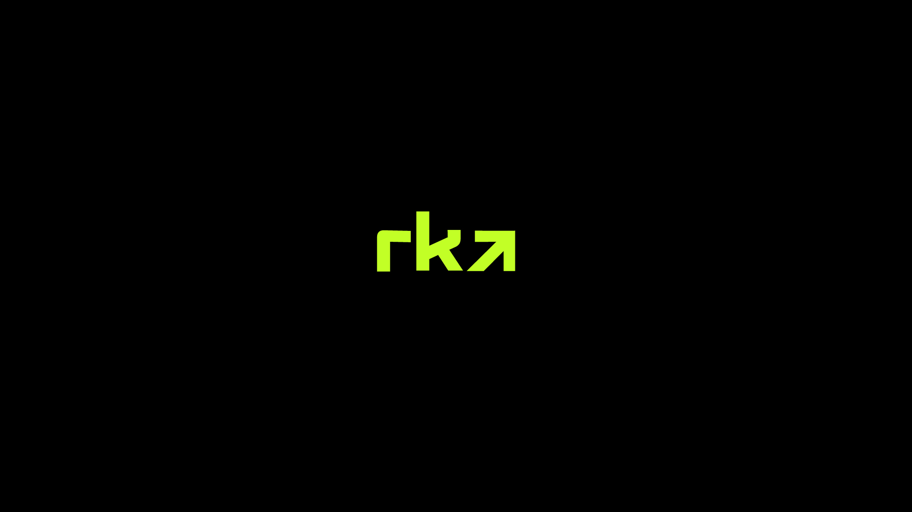
Rooka, es una agencia de publicidad para deportistas y artistas. Al crear esta agencia, sus fundadores buscaban una identidad visual que represente de manera sencilla, la capacidad de Rooka de elevar las carreras de los artistas y deportistas que confiaran en su agencia. La marca también posee un uso de colores vibrantes y llamativos que representan la energía de todos aquellos que conforman la agencia.
Scottish Young Surfers
 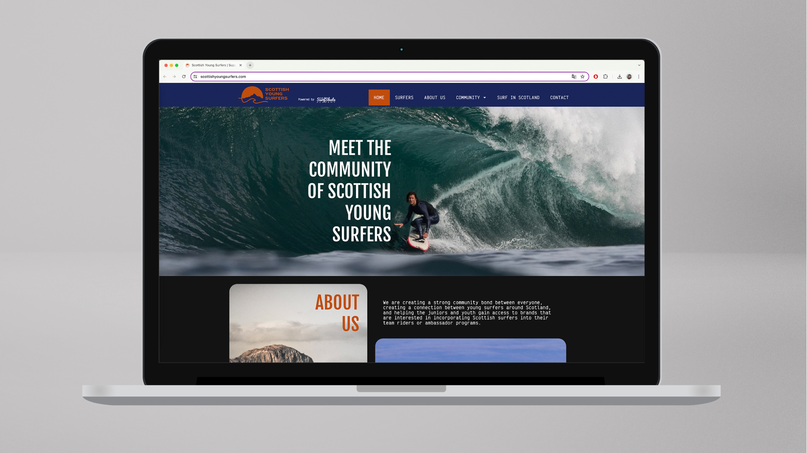
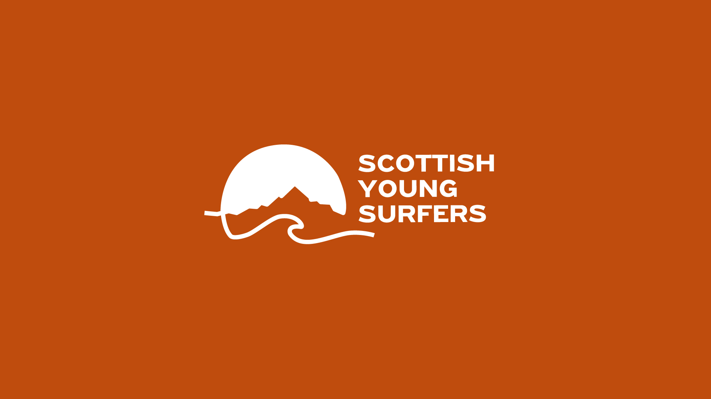
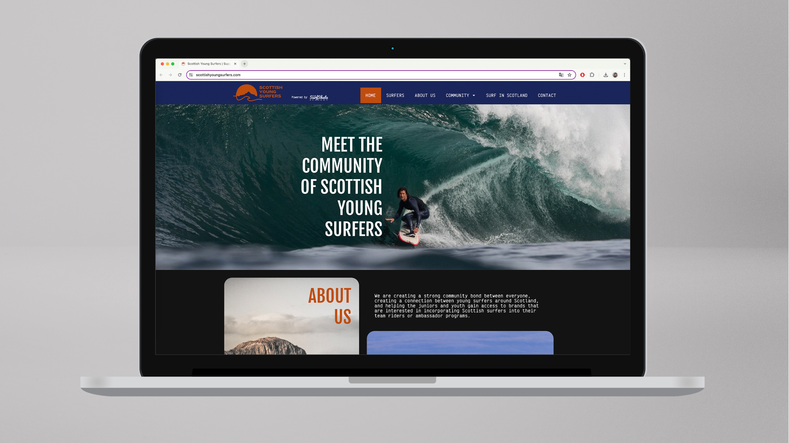
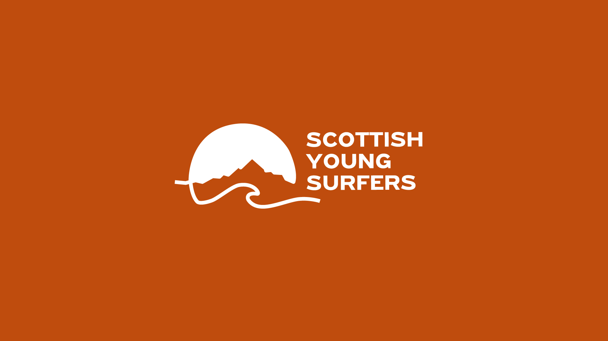
Scottish Young Surfers es una escuela de surfistas ubicada en Escocia. El desafío en este proyecto fue lograr plasmar en la identidad visual, los aspectos únicos e importantes sobre el surf en Escocia que mi cliente intentaba plasmar: la calidez de los atardeceres, las montañas únicas de su paisaje y lo característico del surf allí.